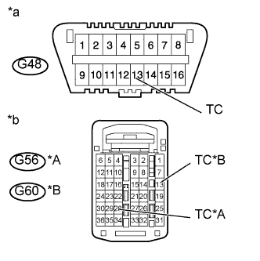
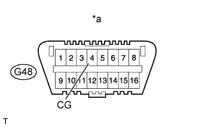
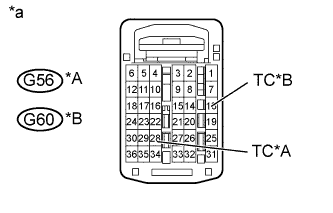

СИСТЕМА ПОДУШЕК БЕЗОПАСНОСТИ > Цепь диагностики |
| 1.ПРОВЕРЬТЕ СИСТЕМУ ПЕРЕДАЧИ ДАННЫХ CAN |
Проверьте, не выводятся ли коды DTC мультиплексной шины CAN.
| Результат | Следующий шаг |
| Выводятся коды DTC (для моделей с левосторонним рулевым управлением, с системой посадки и запуска) | А |
| Выводятся коды DTC (для моделей с левосторонним рулевым управлением, без системы посадки и запуска) | B |
| Выводятся коды DTC (для моделей с правосторонним рулевым управлением, с системой посадки и запуска) | C |
| Выводятся коды DTC (для моделей с правосторонним рулевым управлением, без системы посадки и запуска) | D |
| DTC не выводится | E |
|
| ||||
|
| ||||
|
| ||||
|
| ||||
| E | |
| 2.ПРОВЕРЬТЕ ЖГУТ ПРОВОДОВ И РАЗЪЕМ (DLC3 – ECM) |
|  |
Выключите зажигание.
Отсоедините разъем G56*1, G60*2 от ECM.
Измерьте сопротивление в соответствии со значениями, приведенными в таблице ниже.
| Контакты для подключения диагностического прибора | Условие | Заданные условия |
| G48-13 (TC) - G56-28 (TC)*1 | Всегда | Менее 1 Ом |
| G48-13 (TC) - G60-13 (TC)*2 | Всегда | Менее 1 Ом |
| *A | для моделей с 1GR-FE |
| *B | для моделей с 2TR-FE |
| *a | Вид спереди разъема DLC3 |
| *b | Вид спереди разъема со стороны жгута проводов: (к ECM) |
|
| ||||
| OK | |
| 3.ПРОВЕРЬТЕ ЖГУТ И РАЗЪЕМ (DLC3 - МАССА) |
|  |
Измерьте сопротивление в соответствии со значениями, приведенными в таблице ниже.
| Контакты для подключения диагностического прибора | Условие | Заданные условия |
| G48-4 (CG) - масса | Всегда | Менее 1 Ом |
| *a | Вид спереди разъема DLC3 |
|
| ||||
| OK | |
| 4.ПРОВЕРЬТЕ ЖГУТ ПРОВОДОВ И РАЗЪЕМ (ECM – МАССА) |
|  |
Измерьте сопротивление в соответствии со значениями, приведенными в таблице ниже.
| Контакты для подключения диагностического прибора | Условие | Заданные условия |
| G56-28 (TC)*1 - масса | Всегда | 1 МОм или более |
| G60-13 (TC)*2 - масса | Всегда | 1 МОм или более |
| *A | для моделей с 1GR-FE |
| *B | для моделей с 2TR-FE |
| *a | Вид спереди разъема со стороны жгута проводов: (к ECM) |
|
| ||||
| OK | ||
| ||